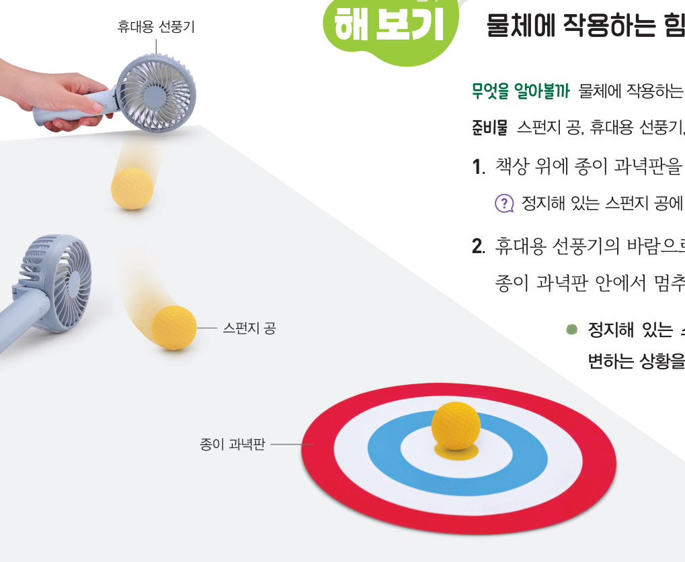
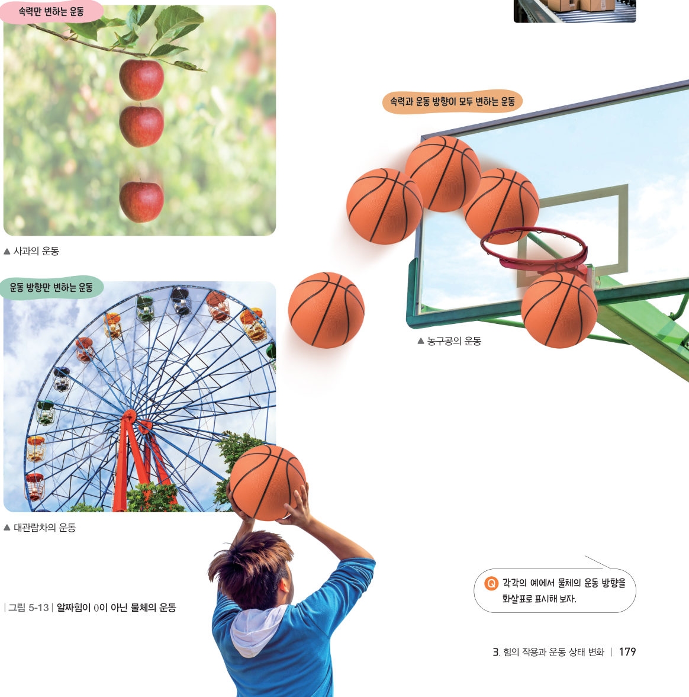
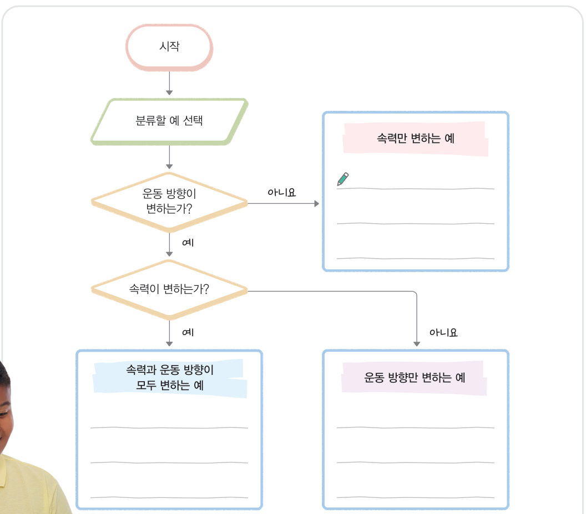

살아있는 교과서 · Ⅴ. 힘의 작용 · 3. 힘의 작용과 운동 상태 변화 · 01 177~181쪽
알짜힘에 따라 달라지는 운동 상태
“나에게 작용할 힘을 고려하고 출발했더니 정확하게 도착했어.” 화살을 쏠 때 화살에 작용하는 모든 힘을 고려해야 하는 까닭은 무엇일까? 가상 선풍기로 스펀지 공을 과녁에 멈추게 하며 알짜힘과 운동 상태의 관계를 알아보자.
🎯 이 단원을 배우면 — 알짜힘이 0이 아닐 때 물체의 운동 상태가 변함을 설명하고, 운동 상태가 변하는 예를 조사하여 분류할 수 있다.
중단원 열기세 번째 블록 질문 177쪽
스쿠버 다이빙을 할 때는 다양한 장비가 필요해. 특히 스쿠버 다이버가 물속에서 위아래로 움직이려면 몸에 작용하는 힘을 조절하는 부력 조절 장치가 필요하지.
세 번째 블록
부력 조절 장치는 어떤 원리로 몸에 작용하는 힘을 조절할까?
‘알짜힘에 따라 달라지는 운동 상태’(178쪽), ‘일상생활에서 찾는 힘의 작용’(182쪽), ‘힘의 특징을 이용한 기구나 장치 설계하기’(186쪽)의 블록을 모아요. 🧩
해 보기물체에 작용하는 힘에 따른 운동 상태 변화 알아보기 178쪽
알짜힘이 작용하면 물체의 운동 상태는 어떻게 변할까?
화살은 날아가는 동안 중력과 바람이 작용하는 힘 등 여러 가지 힘의 영향을 받아 속력과 운동 방향이 변한다. 이와 같이 물체의 운동 상태는 물체에 작용하는 모든 힘의 합력으로 결정되며, 이 힘을 알짜힘이라고 한다.

178쪽휴대용 선풍기의 바람으로 스펀지 공을 종이 과녁판 안에서 멈추게 한다.
게임가상 선풍기로 공을 과녁에!
책상을 누르고 있는 동안 그 자리에서 선풍기 바람이 스펀지 공을 밀어요(바람은 누른 곳 → 공 방향). 공의 속력과 운동 방향을 바꿔 가운데 과녁에 멈추게 해 보자. 빨간 화살표는 공에 작용하는 알짜힘, 초록 화살표는 공의 운동 방향과 속력이에요.
1정지해 있는 스펀지 공에 작용하는 알짜힘은 이다. 공에 바람이 작용하면 공의 이 변한다.
2정지해 있는 스펀지 공이 움직이거나 스펀지 공의 운동 방향이 변하는 상황을 알짜힘과 관련지어 설명해 보자.
교과서알짜힘과 운동 상태 변화 179쪽
물체에 힘이 작용하지 않거나, 물체에 작용하는 힘이 평형을 이루어 알짜힘이 0일 때에는 물체의 운동 상태가 변하지 않는다. 그러나 물체에 작용하는 알짜힘이 0이 아닐 때에는 물체의 운동 상태가 변한다. 물체의 운동 상태 변화는 속력만 변하는 경우, 운동 방향만 변하는 경우, 속력과 운동 방향이 모두 변하는 경우로 분류할 수 있다. 예를 들어 그림 5-13과 같이 사과나무에서 떨어지는 사과는 운동 방향이 일정하고, 속력이 변하는 운동을 한다. 대관람차는 속력이 일정하고, 운동 방향이 변하는 운동을 한다. 비스듬하게 위로 던진 농구공은 운동 방향과 속력이 모두 변하는 운동을 한다.

그림 5-13알짜힘이 0이 아닌 물체의 운동
오개념 바로잡기 · 움직이는 물체에는 모두 알짜힘이 작용할까? 물체가 움직이고 있어도 운동 상태가 변하지 않을 때에는 물체에 작용하는 알짜힘이 0이다. 예를 들어 컨베이어 벨트 위에서 이동하는 상자는 속력과 운동 방향이 모두 변하지 않으므로 작용하는 알짜힘이 0이다.
움직이는 그림 5-13운동 방향 화살표 보기
각 운동을 골라 보자. 초록 화살표는 운동 방향과 속력(길이), 빨간 화살표는 알짜힘이에요. 화살표의 길이와 방향이 어떻게 바뀌는지 관찰하자. 아래 그래프는 시간에 따른 속력이에요.
1운동 상태 변화를 분류해 보자.
떨어지는 사과
대관람차
비스듬히 던진 농구공
컨베이어 벨트 위 상자
탐구물체의 운동 상태가 변하는 예 분류하기 180~181쪽
자료 수집 모둠별로 물체에 힘이 작용하여 운동 상태가 변하는 예를 조사한다.
분류 조사한 예를 순서도를 활용하여 속력만 변하는 예, 운동 방향만 변하는 예, 속력과 운동 방향이 모두 변하는 예로 각각 분류한다.
협력적 소통 분류한 내용을 다양한 방법(포스터, 보고서, 정보 그림, 동영상, 만화 등)으로 정리하여 발표한다.
제작한 발표 자료를 공유 플랫폼에 올리고, 다른 모둠의 발표 자료를 살펴본다.

180쪽분류 순서도 — 운동 방향이 변하는가? → 속력이 변하는가?
1순서도를 활용해 분류해 보자.
번지 점프를 하는 사람
일정한 빠르기로 도는 회전목마
출발하여 점점 빨라지는 버스(직선 도로)
휘어지며 날아가는 프리킥 축구공
시계 초침의 끝
2🧑🤝🧑 우리 모둠이 조사한 예를 순서도로 분류하고, 어떤 형태로 발표할지 써 보자.
스스로 확인하기178쪽 학습 목표를 달성했는지 확인해 보자 181쪽
1개념 확인 물체에 작용하는 모든 힘의 합력을 ( )(이)라고 한다.
2사고력 수평면 위에서 수레를 밀다가 놓았더니 수레의 속력이 느려지다가 멈췄다. 수레에 작용하는 알짜힘을 수레의 운동 상태와 관련지어 설명해 보자.
5분 테스트알짜힘에 따라 달라지는 운동 상태
1물체에 작용하는 알짜힘의 크기가 일 때 물체의 운동 상태가 변하지 않는다. 운동 상태 변화는 속력만 변하는 경우, 운동 방향만 변하는 경우, 속력과 운동 방향이 모두 경우로 분류할 수 있다. 컨베이어 벨트 위에서 이동하는 상자에 작용하는 알짜힘은 이다.
2⑨ 움직이는 물체에는 모두 알짜힘이 작용한다. ⑩ 물체에 작용하는 알짜힘이 0이 아닐 때 운동 상태가 변할 수 있다.
스스로 정리하기알짜힘과 운동 상태 변화 188쪽
1알짜힘과 물체의 운동 상태 변화
(1) : 물체에 작용하는 모든 힘의 합력 (2) 알짜힘이 0일 때: 물체의 운동 상태가 . (3) 알짜힘이 0이 아닐 때: 물체의 운동 상태가 . (4) 운동 상태 변화 분류: 속력만 변하는 경우 / 만 변하는 경우 / 속력과 운동 방향이 모두 변하는 경우
제출학생 정보 · 제출하기
모든 활동을 마친 뒤 제출하면 전체가 한 번에 채점되고 피드백이 나타나요. 답안은 선생님 스프레드시트(중1 탭)에 기록돼요.